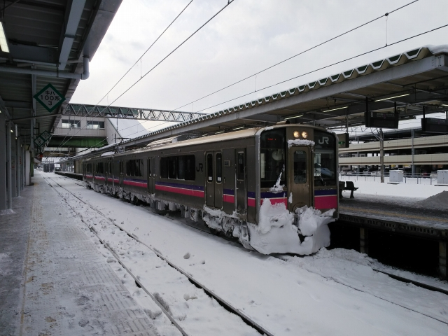
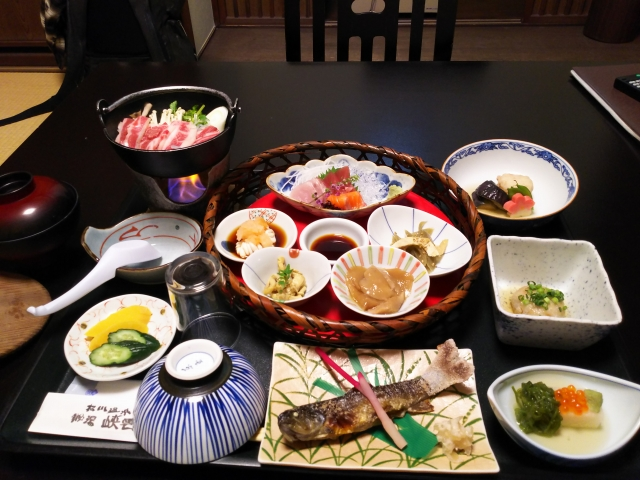

2022（R4）1月6～9日 松川温泉
まだ、あれが現役で走っているというので、訪ねてみました・・・
さすが東北はもう雪・・・ではなく、まだ米原です。
彦根あたりから、正月の雪がまだ残ってました。
正面は伊吹山。こんな雪の中走るのは、何度も通っ
たことのあるこの区間でも、初めてっす。
近江長岡で「ワイドビューひだ」の通過待ち。
えらい積雪やで。
で、突然、箱根湯本まで飛びます。小田原までは、
積雪は無かったものの、降雪が続いてました。
箱根湯本の雪は、今日積もった雪やね。
昔乗った時は、小田原から箱根登山鉄道に乗ったけ
ど、今は箱根湯本で乗り換えです。同じホームの奥
側に強羅行が停まってました。
あわてて乗り込みます。
なんかしゃれた新しい車両になってます。
車窓はほとんど東北の車窓やがな。
名物のスイッチバック。雪の中、運転手さんはホー
ムを通って反対側へ。寒いのに大変やなぁ。
宮ノ下に到着。ほんまは湯本の温泉に行くつもりや
ったのに、木曜が定休日！しょうがなく、一番近い
共同浴場となる宮ノ下温泉までやって来た次第です。
構内踏切のある、いい感じの駅です。
７～８分歩いて、太閤湯に到着。
店番はなぜかインドorネパール系の夫婦でした。
日本語ペラペラやったから良かったけど。
客はおらず、貸切状態でした。そりゃこんな雪の中
わざわざ来んわなぁ。
珍しいことに、湯船は２つありました。写真の、狭
い方に入りました。
駅に戻ってきました。駅に門松があるとは、なかな
かない光景っすね。
雪は降り続き、駅員さんも除雪で大変です。
無事、箱根湯本駅に戻ってきました。
そして、今日の本命です。
先日、３月での定期運用離脱が発表された、名車Ｖ
ＳＥです。
小田急ロマンスカーの伝統の連接構造を、現役で唯
一採用している、フラッグシップ車ですね。
そうです。これに乗って、新宿に向かいます。

もちろん、最前列は売り切れ。それでも展望エリア
の席（前から４列目）をゲット！
１０数年前、初めて乗った時は、大阪のＪＴＢで最
前列をゲットした記憶があるけど、今やロマンスカ
－の席も、ネットでゲット出来るようになってます。
あっという間に新宿到着。撮り鉄に囲まれてます。
最前列の人が途中で下車して、新宿まで空席！もち
ろん、途中５分ほど、最前列に座ってみました。
しかし、もう定期特急から引退とは、早すぎやろ！もったいなすぎる・・・
さて、その後は東京から夜行バスで仙台へ。
八重洲の乗り場が少し離れてて、地下改札や地下街
が予想に反してしまってて、乗り遅れかけましたわ。
しかし３列シートで３０００円ちょっととは、安す
ぎやろ！
５時に着いたので、駅前の２４ｈ開いてるマクドで朝食。
６時の列車で北に向かいます。仙台駅の反対側は、こんな感じなんか。
小牛田で乗り換えなくて済む、珍しい一ノ関直通便
です。
が、最悪のロングシート車や・・・。
米原のほうが雪積もってたがな。
一ノ関到着。定点観測のような写真っすね。この１
年で３回目やがな。
たちの悪いアホな駅員とひともめあり。キレてはな
いけど、一ノ関の印象は悪なったわ。
アホな駅員は、その街の印象まで変えてまうので、
採用は慎重にせなあかんよ、ＪＲさん。
盛岡到着。
雪の量は、さすが東北らしくなってきました。

隣のホームには、田沢湖線の普通列車が。広軌用の
車両ですが、見た目は特徴ないっすね。
駅前広場です。次のバスまでめちゃめちゃ時間あっ
たけど、さすがにこの雪＆寒さで、出歩く気力ゼロ。
駅ビルの中でじっとしてました。
次の目的地に向かうバスが到着。
１時間ほどバスに揺られて到着しました。
おっ、ＥＬが展示されてる。
そう、松尾鉱山鉄道で走ってたＥＬですね。
もうちょっと近づきたいけど、この雪では無理っす。
ここは松尾鉱山資料館。雲上の楽園と言われた松尾
鉱山の資料があって、もちろん松尾鉱山鉄道の資料
もあるみたいです。
無料で入れるみたい。
昔の鉱山会社って、待遇良かったんすね。Ｇ車で出
張て。こんな出張、してみたい！
この雪の中、ほとんど残ってない廃線跡を探す気力
はおまへん。
しかし、すごい規模の設備やったみたいです。
次のバスまで、ストーブを焚いてくれた資料館の中
ですごさせてもらいました。ありがとう！資料館！
さて、次のバスに乗って、いよいよ目的地へ。
いましたいました！
なんと、ボンネットバスです！
多分、今の日本で観光以外の現役ボンネットバスは、ここだけです。
この区間、ここから先は通常のバスでは雪道を登れないので、冬期だけ
このボンネットバスが登場するとのこと。
４駆のバスやから、生き残ってるそうです。
真っ先に乗り込みました。
座席は少ないっすね。運転席の横にも、横掛けの座
席がありました。
チェーン巻いてるのに、乗り心地は悪くなかったで
す。
寒いかなと思ったけど、予想外に煖房が良く効いて
て、十分暖かかったっす。
終点の松川温泉に到着。
今回は、奮発してこの宿に宿泊です。
しかし１９６８年製とは、同い年でっせ。
末永く頑張ってほしいものです。
部屋は地熱で煖房してるとのことで、暑いぐらいでした。
強弱は調節できないので、暑かったら窓を開けてくれとのこと。
ボンネットバスは最終バスとして戻って行きました・・・
ひえ～、マイナス８℃！

夕食は部屋食なので、一人旅の身にはありがたい。
しかし、予約してたメニューと違うものが来たので、
丁寧に変更をお願いしました。（キレてないっすよ）
温泉は白濁のお湯で、大変よろしゅうございました。
しかし去年も思ったけど、これだけ外気温低いと、
露店風呂って首より上と下の温度差がキツくて気持
良くないっすね。
翌朝。雪はやんでたので、始発のボンネットバスの
到着を待ちます。
動画まで撮って、ちょっとハイテンションになって
しまいました。

やっぱり温泉宿は１泊では物足りん・・・。
ボンネットバスで帰路につきます。
一番後ろの席に座りました。過ぎ去っていく風景を
見てると、そりゃ４駆やないと無理やな、という道
でした。
ここでボンネットバスとはお別れ。末永く、活躍し
て下さい。
途中、「上」というバス停がありました。「かみ」
と読むんすね。他に「分レ」というバス停もあって
バス停の名前って、おもしろいのがありますね。
雪道のせいか、盛岡行きのバスはだだ遅れ。なんとかホームに駆け込んで
予定の電車に間に合いました。
一ノ関で乗り換え。
次の乗換え駅の小牛田で、最新のディーゼル機関車
発見！
機関車系も、国鉄型がどんどん淘汰されてってます
ね。
黙々と乗りついで、常磐線の原ノ町到着。まだ５時
前ですが、すでに暗くなってきました。
ここからようやく本日初のクロスシート車です。
黙々と乗りついで、水戸に到着。
本日はここまで。
水戸のビジネスホテルに泊まりましたが、ここであ
ることを達成しました！
さて、なんでしょう？
翌朝、引き続き常磐線を南下。
土浦駅に到着。
ここからバスに乗換えます。
バスでやってきたのはつくば。
昔、自殺者が多い街って聞いたことがあったけど、
うなずけるような、無機質な街並みですね。
街の中心のつくばセンター到着。
そうです。そのまま常磐線を南下するのも芸がない
ので、初乗りとなるつくばエクスプレスに乗り込み
ます。
折り返しの電車が到着。
しかし、地下駅とは意外でした。
すぐに地上に出て、高架を１２０ｋｍ／ｈで飛ばし
ます。かぶりつきポジションで堪能してしまいまし
た。
あっという間に終点の秋葉原着。
途中、北千住で常磐線を北上するカシオペアとすれ
違い！やっぱ、持ってるわ。
このまま帰っても芸がないので、未乗区間に寄り道。
北千住に戻って、東武の乗換えて西新井駅へ。
昭和っぽい昔ながらの駅です。
奥に、東武らしからぬ塗装の電車が停まってます。
これは大師線の電車ですね。
一駅しかない盲腸線で、すぐに終点の大師前駅に到着。
実はこの大師前駅、改札がありません。
ただ乗りし放題やん！というのは早とちり。実は西新井の駅の乗換えの所
に改札があって、そこで切符が回収されたり切符買ったりします。
途中駅がないから出来る方法っすね。
名前の通り、西新井大師が駅の目と鼻の先にあります。
初詣客でにぎわってました。
そのまますぐにとんぼ返りで、北千住を通り過ぎて
曳舟駅へ。
ここから、もうひとつの未乗線の亀戸線に乗換えます。
スカイツリーがよう見えてます。
ここでもかぶりつきポジション。踏切が多い、昔な
がらの路線でした。
終点の亀戸に到着。
実は東武の歴史としては、この路線が最初にできた
路線です。
貨物がメインの鉄道やったので、国鉄に接続するの
が最優先やったんでしょうね。
で、最後にもう一度、ＶＳＥです。
新宿駅にはマニアがたかってます。
さすがに展望席は取れず、普通の席です。
小田原までノンストップのスーパーはこねは、ほぼ
満席。
遠くに富士山が見えてきました。
後ろの方の車輛やったので、カーブする編成の先の
ほうを撮ろうとするけど、うまくいかん。
なんとか撮れたかな。
結局、新宿発車した時の右カーブが最大のチャンスやったわ・・・
小田原に近づくと、富士山がはっきり見えてきまし
た。
今日は、小田原で降ります。
ん～、いい車両です。もう乗ることはないんかな。
あとは黙々と帰るだけ。根府川あたりで四季島とす
れ違いました。やっぱり持ってる。
冬晴れで、鈍行の車内から富士山が綺麗に見えまし
た。
沼津から先、トイレなし列車で腹痛が・・・
今までこのトイレなし区間でヤバいことはなかった
のに、とうとう大ピンチ！
もう途中で降りて、１本遅らすかと思った頃、静岡
でトイレ付車両の増結が！助かった～